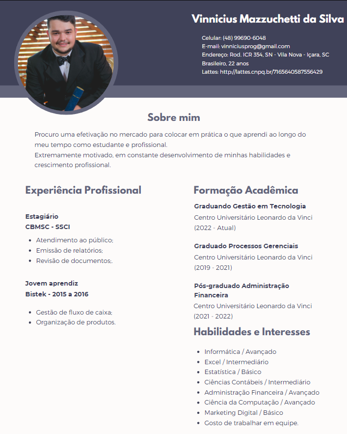

Currículo
Sou graduado em Processos Gerais, pós-graduado em Administração Financeira e atualmente cursando Análise de Desenvolvimento de Sistemas. Possuo uma sólida formação que abrange diversos aspectos do conhecimento.
Atividade extensionista
A inclusão digital para a agricultura familiar
Clique aqui para abrir o PDF